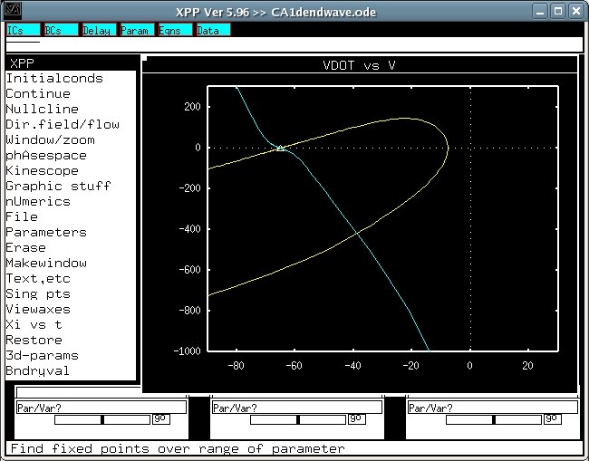
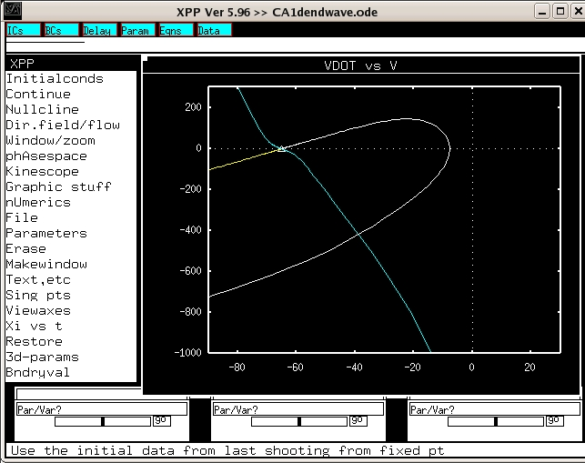

This is the readme for the XPP model associated with the paper: Acker CD, White JA (2007) Roles of I(A) and morphology in action potential propagation in CA1 pyramidal cell dendrites. J Comput Neurosci 23(2):201-16 The following tutorial is also available as a pdf in the papers supplementary material at the JCNS web site. Traveling Waves in XPPAUT, a Tutorial As Hodgkin and Huxley demonstrated in 1952 (Hodgkin and Huxley, 1952), traveling wave attractors (TWAs) control propagation of action potentials down axons. TWAs are also present in neuronal dendrites and control backpropagating action potentials and forward propagating dendritic spikes. In this tutorial, we demonstrate how we compute TWAs for the model CA1 pyramidal cell dendrites used in Fig. 2 of the article. The text file accompanying this tutorial CA1dendwave.txt should be renamed to CA1dendwave.ode. It contains the code and model equations necessary for simulation in the program XPPAUT (Bard Ermentrout, University of Pittsburgh), which can be downloaded for free (http://www.pitt.edu/~phase/). The book for XPPAUT (Ermentrout, 2002) contains examples and explanations in Chapter 6 that are closely related to the present tutorial. In XPP you can chose to use the menu and click with the mouse or just type the letters in parentheses. Run XPP: xpp CA1dendwave.ode or xppaut CA1dendwave.ode If XPP is installed properly, XPP with start and you will see an empty plot of VDOT vs. V. Find singular point and follow manifolds: (S)ing pts, (G)o, (N)o, (Y)es or in xpp version 5.96: Sing pts -> (G)o -> print eigenvalues -> NO -> Draw Invariant Sets? -> YES VDOT out of bounds -> OK, OK Draw strong sets -> yes, OK, OK You should see a triangle appear before it asks you whether or not to draw invariant sets. This is the resting potential of the membrane, V=-65mV, VDOT (the derivate of voltage)=0. When drawing the invariant sets, you will first see a yellow line emerge from the triangle and the program will stop and report that a variable is out-of-bounds. Hit enter to say ok and continue to see another line emerge from the other side of the triangle. Hit ok to finish. This is the 1-D unstable invariant set or manifold for our model. We are only interested in the line that emerges first and curves around.  Change the shooting parameter K: (P)arameters, K, enter another number. By default, K, which is proportional to the wavespeed, is equal to 4. We saw that the right side of the invariant manifold curved around and diverged to -infinity. When this happens, K is too small and must be increased. Conversely, when VDOT (or V) diverges to +infinity, we must decrease K. After changing K, we always find the new invariant sets, and by trial-and-error, refine K to several decimal places. Eventually, you will see that the first-to-emerge yellow line will approach the fixed point (triangle) before abruptly diverging. For these equations it is very difficult to get the manifold to come very close to the fixed point, but with K= 5.010975 we are very close to the real homoclinic orbit that corresponds to the traveling wave. Shoot: (I)nitialconds, s(H)oot, enter (to leave at 1), (O)k to finish or in XPP Ver 5.96: Integrate -> (S)hoot -> 1 Now we've actually integrated the equations and you should see a white line that retraces the forward time unstable manifold (yellow) from before. The waveform is now available in the data browser.  Plot the traveling wave attractor as a function of time: (X)i vs t, V -> enter "V" It's there but you can't see it very well. We need to zoom in and ignore the large negative spike. (V)iew axes, (2)d, ymin=-90, hit tab to accept and exit. Determine peak value of traveling wave action potential: First open the data browser, by clicking the blue Data button. F(ind), change value to a very big number, say 1000, tab to exit. Now the top row of data contains the membrane potential value closest to 1000, i.e. the peak voltage value, in this case 11.5mV. You can also output this data by clicking (T)able and import to another language and use a more sophisticated peak detection routine. Determine the wavespeed for our traveling wave. In the data browser, scroll over to the right using the right arrow key until you find the column of values of the wavespeed c (see the code for the formula). You will find that in this case, the action potential travels at 0.274 m/s. (ModelDB Administrator note: I got 0.245 m/s) References Ermentrout B (2002) Simulating, analyzing, and animating dynamical systems: SIAM. Hodgkin AL, Huxley AF (1952) A quantitative description of membrane current and its application to conduction and excitation in nerve. J Physiol 117:500-544.